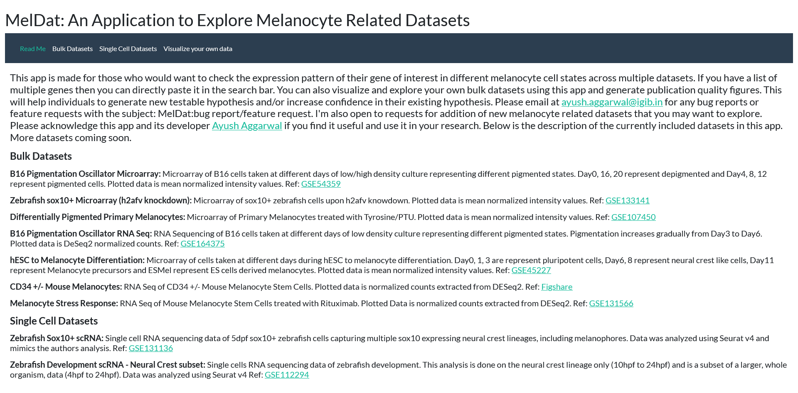

Introducing MelDat: A Web-Based Application for Exploring Melanocyte Datasets.
I have developed an R Shiny-based application that provides a user-friendly platform for effortless exploration of multiple melanocyte-related datasets.
Originally conceived as a resource for our laboratory, it initially contained datasets generated within our research group. During our lab meetings and
scientific discussions, we often encountered new genes that showed potential relevance to melanocyte biology. We immediately became intrigued to
understand the behavior of these genes within our datasets and their potential role in melanocytes. In order to foster and sustain this curiosity,
and to eliminate the need for repeated manual exploration of the datasets, I developed this web-based application. Eventually, I expanded the application to
include other publicly available datasets as well, and I plan to continue incorporating more as time permits. What's more, MelDat provides the capability to
explore your own RNA sequencing or microarray datasets, generating high-quality figures suitable for publication. This ongoing effort aims to
provide researchers with a comprehensive tool to investigate and analyze melanocyte datasets conveniently. Now, researchers can easily access
and analyze these diverse datasets, empowering them to delve deeper into this fascinating field of study.
